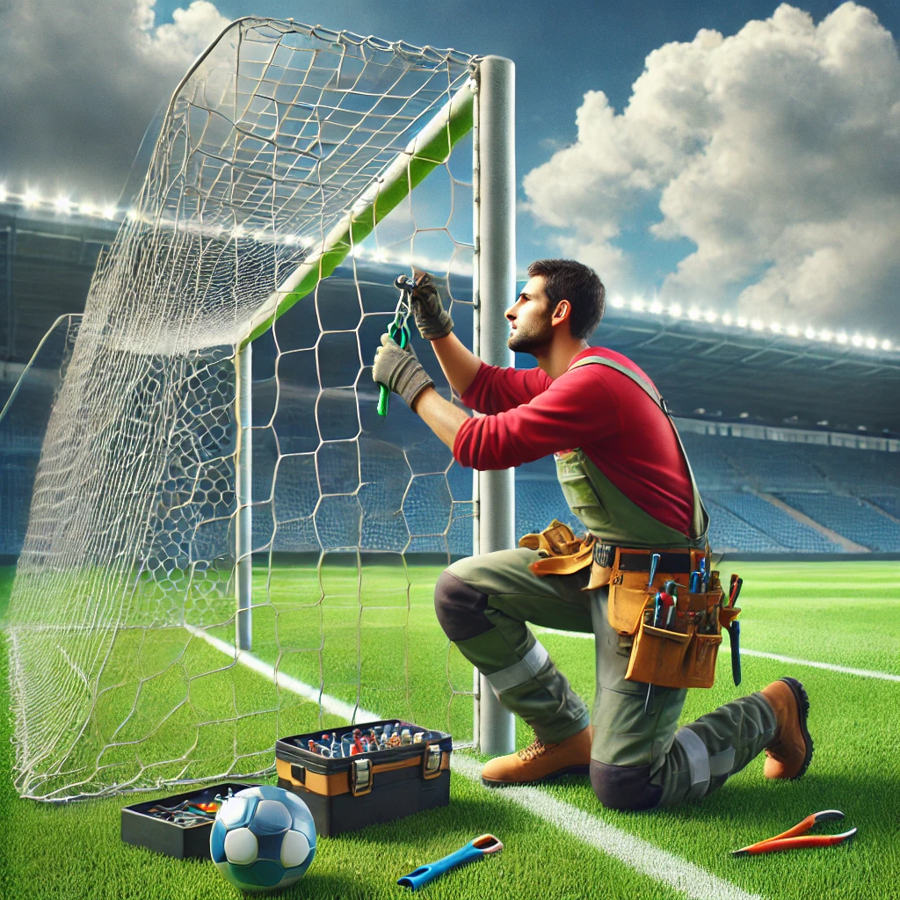
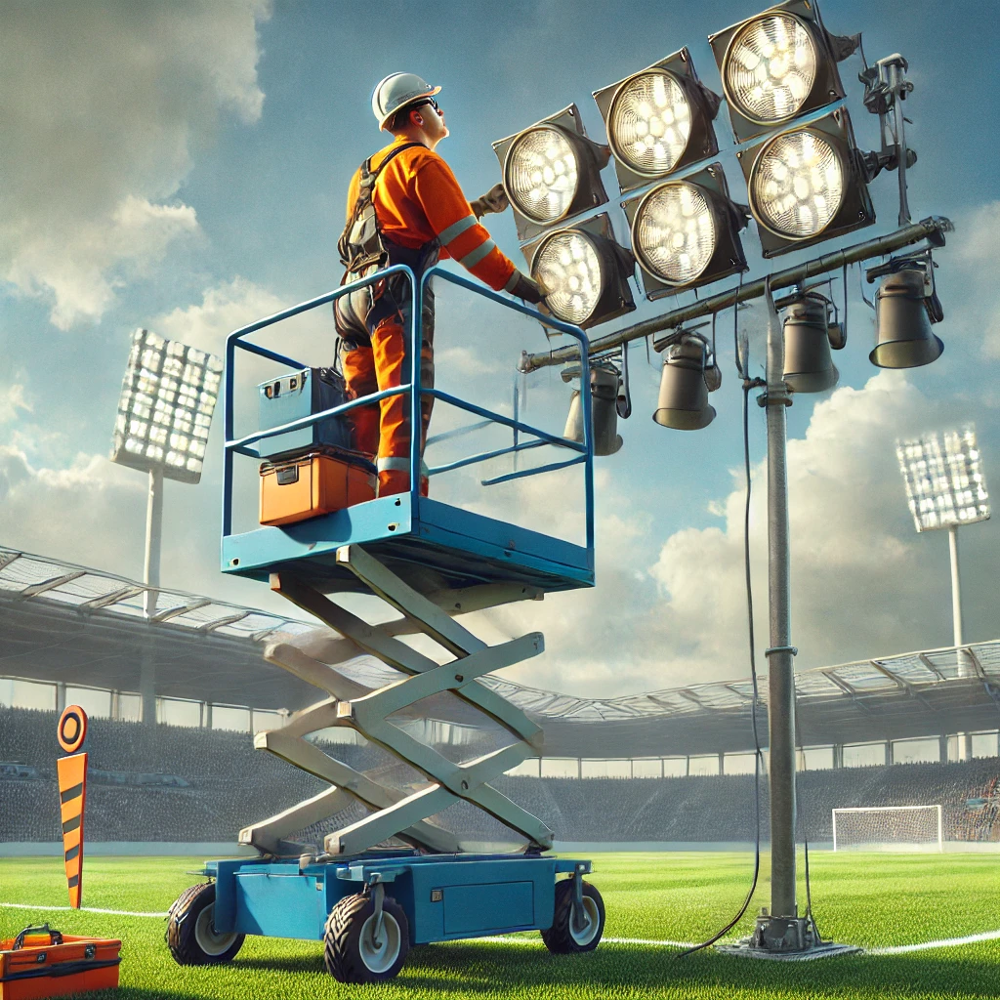
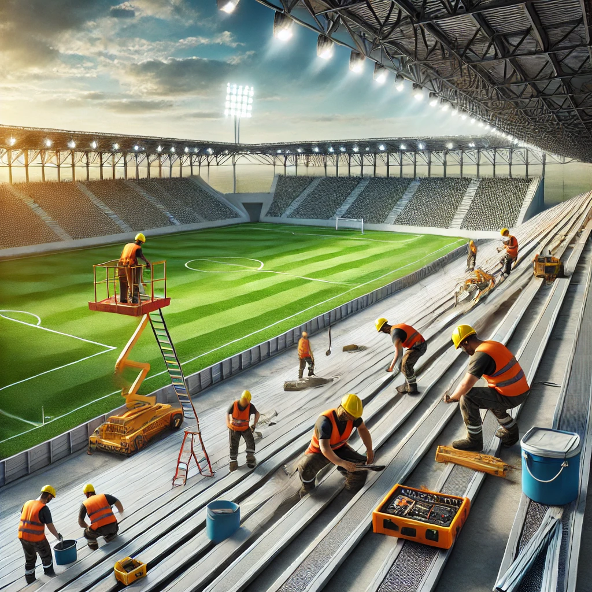

สิ่งอำนวยความสะดวกของเรา
ให้บริการบำรุงรักษาสนามฟุตบอลเพื่อให้สนามมีคุณภาพดีที่สุดสำหรับการแข่งขัน
การตีเส้นสนาม
ใช้อุปกรณ์ที่มีความแม่นยำสูงเพื่อให้เส้นสนามชัดเจนและทนทาน ตามมาตรฐานระดับมืออาชีพ

การตัดหญ้าและดูแลสนาม
บริการตัดหญ้าและบำรุงรักษาสนามเพื่อให้สนามมีสุขภาพดีและอยู่ในสภาพที่ดีที่สุด
ซ่อมแซมและบำรุงรักษาเสาประตู
ตรวจสอบและซ่อมแซมเสาประตูเพื่อให้มีความปลอดภัยและทนทานต่อการใช้งาน
ซ่อมแซมระบบระบายน้ำ
โซลูชันการระบายน้ำเพื่อป้องกันน้ำท่วมขังและรักษาสภาพสนามให้เหมาะสมสำหรับการใช้งาน
บำรุงรักษาระบบไฟสนาม
ตรวจสอบและซ่อมแซมไฟสนามเพื่อให้แสงสว่างเพียงพอสำหรับการแข่งขันกลางคืน
ซ่อมแซมอัฒจันทร์และตรวจสอบความปลอดภัย
เสริมความแข็งแรงของอัฒจันทร์เพื่อความปลอดภัยและความสะดวกสบายของผู้ชม
บำรุงรักษาหลังคาสนามกีฬา
ซ่อมแซมและเสริมความแข็งแรงของหลังคาเพื่อป้องกันความเสียหายจากสภาพอากาศ

ที่ปรึกษาด้านสนามฟุตบอล
ให้คำแนะนำด้านการบำรุงรักษาสนาม กลยุทธ์การดูแลสนามหญ้า และแนวทางปฏิบัติที่ดีที่สุด